Align the Camera and Tube Lens
In this section we build a fixed focal length camera that will serve as the base for building the rest of the microscope.
Parts List
Below is the parts list for this section of the basic training course. Note that some of the parts used in the course are now obsolete. In these cases the parts listed below are the closest current match to the obsolete parts.
| Part | Manf. Part No. | Quantity | URL |
|---|---|---|---|
| Camera | Grasshopper3 GS3-U3-51S5M | 1 | https://www.teledynevisionsolutions.com/en-150/products/grasshopper3-usb3/?model=GS3-U3-51S5M-C |
| Camera USB Cable | 1 | ||
| Cage Assembly Rod, 10" Long, Ø6 mm | ER10 | 4 | https://www.thorlabs.com/thorproduct.cfm?partnumber=ER10 |
| 30 mm to 60 mm Cage Adapter, 0.5" Thick | LCP33/M | 2 | https://www.thorlabs.com/thorproduct.cfm?partnumber=LCP33/M |
| Adapter with External SM1 Threads and Internal SM2 Threads | SM1A2 | 1 | https://www.thorlabs.com/thorproduct.cfm?partnumber=SM1A2 |
| Tube Lens, f = 200 mm, ARC: 350 - 700 nm, External M38 x 0.5 Threads | TTL200 | 1 | https://www.thorlabs.com/thorproduct.cfm?partnumber=TTL200 |
| Adapter with External SM2 Threads and Internal M38 x 0.5 Threads | SM2A20 | 1 | https://www.thorlabs.com/thorproduct.cfm?partnumber=SM2A20 |
| 60 mm Cage Plate, SM2 Threads, 0.5" Thick, M4 Tap | LCP34/M | 1 | https://www.thorlabs.com/thorproduct.cfm?partnumber=LCP34/M |
| SM1 Quick-Release Adapter Set | SM1QA | 1 | https://www.thorlabs.com/thorproduct.cfm?partnumber=SM1QA |
| Adapter with External C-Mount Threads and External SM1 Threads, 3.2 mm Spacer | SM1A39 | 1 | https://www.thorlabs.com/thorproduct.cfm?partnumber=SM1A39 |

In addition, you will need 2 mm and 0.05" Allen screwdrivers.
Instructions
 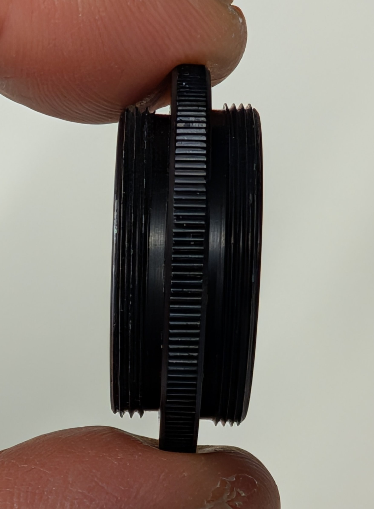
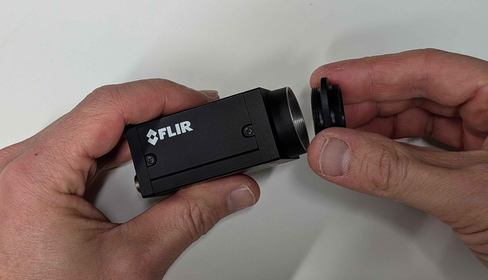
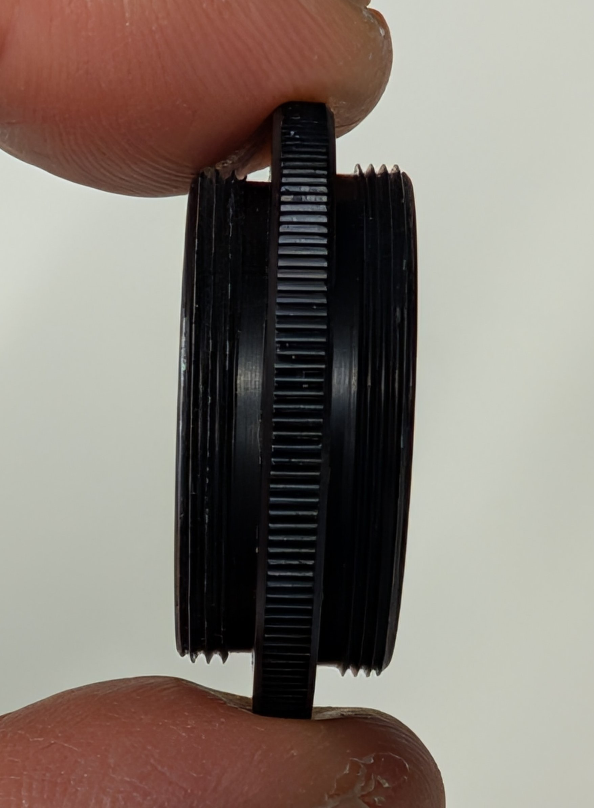
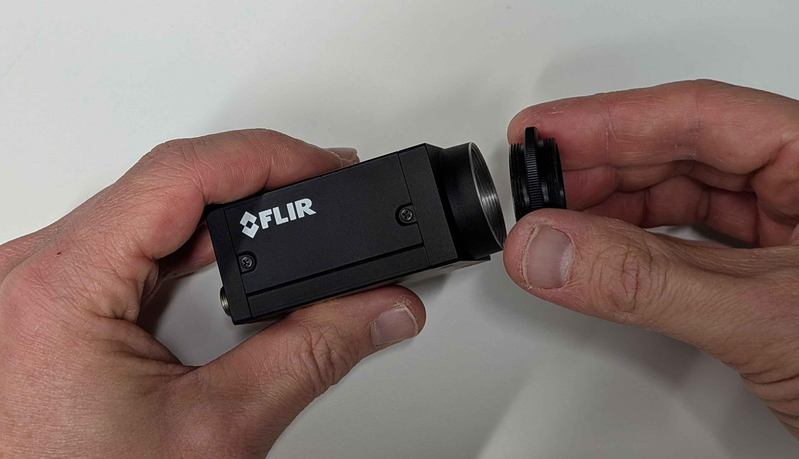
 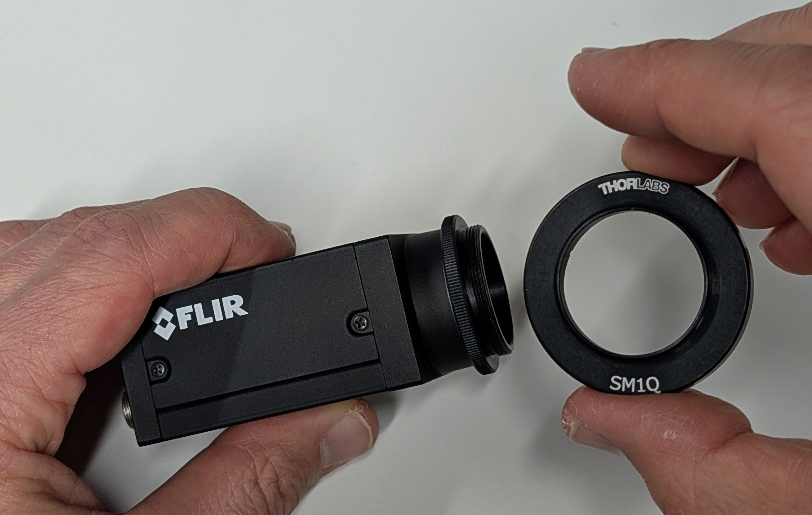
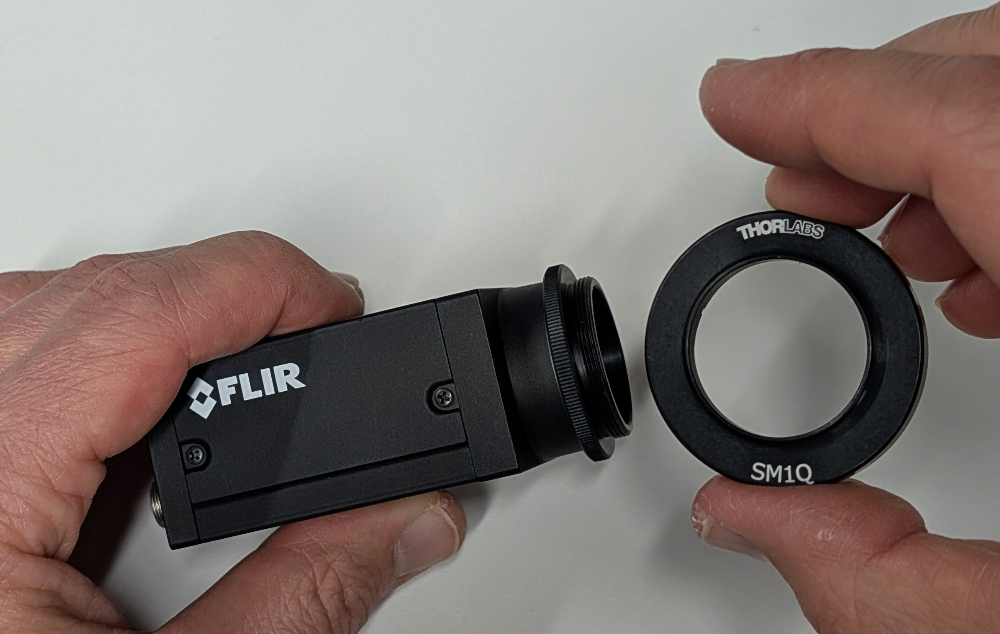


 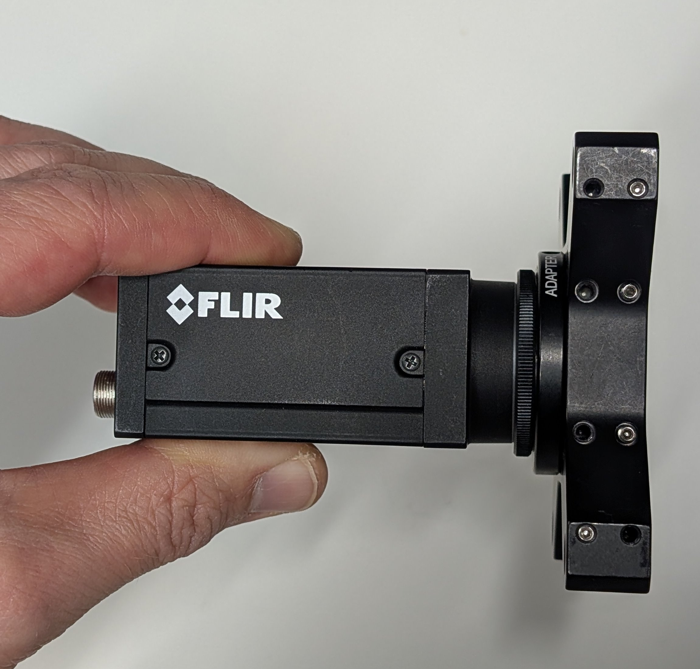
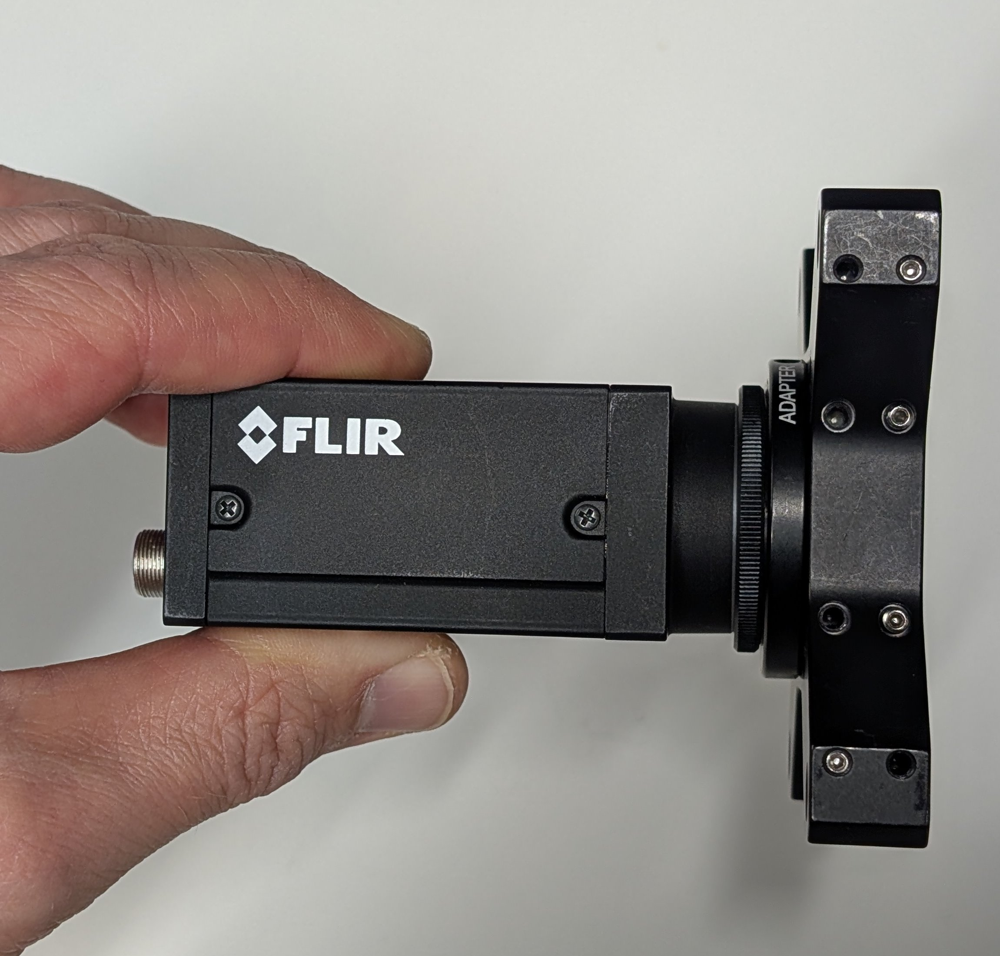
 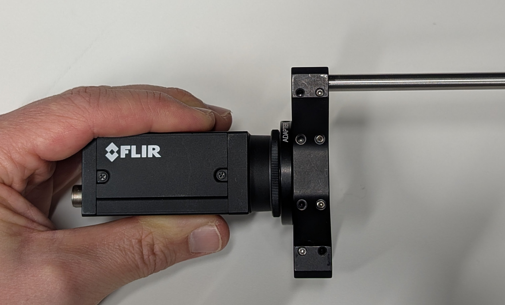
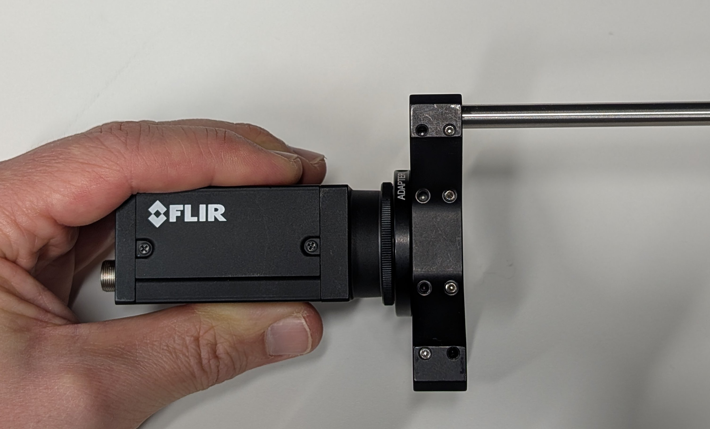


 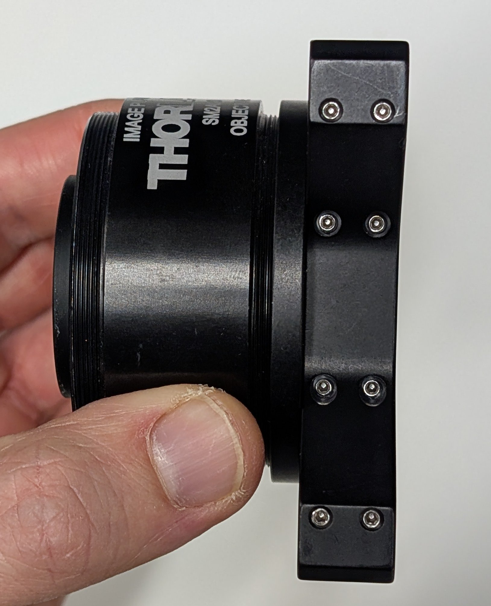
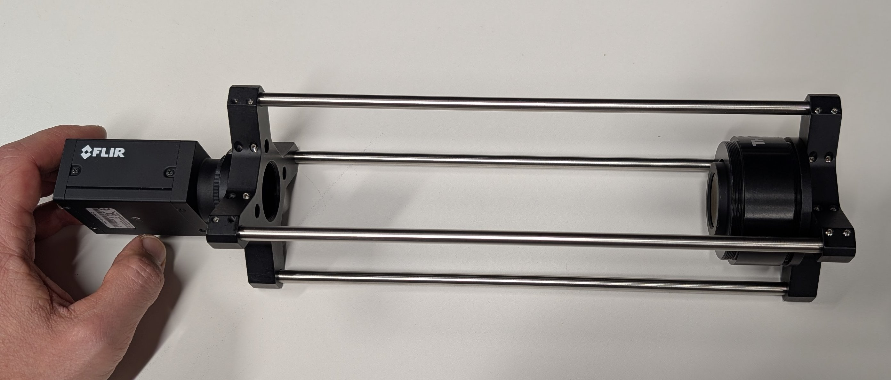
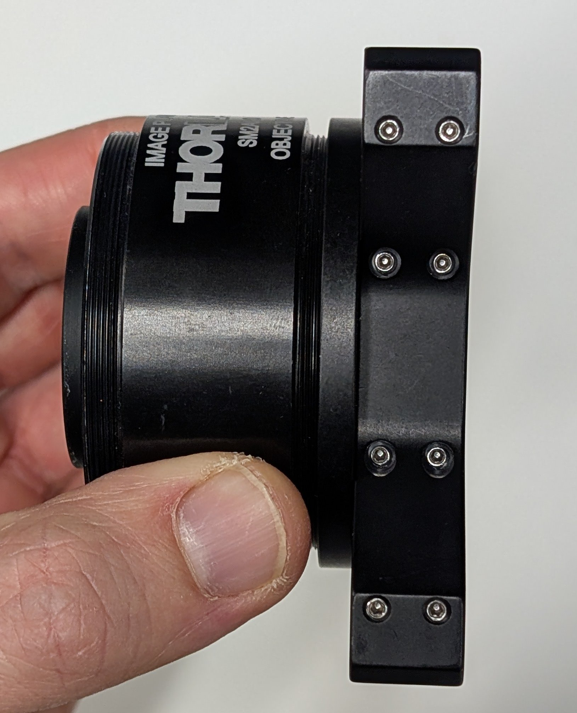
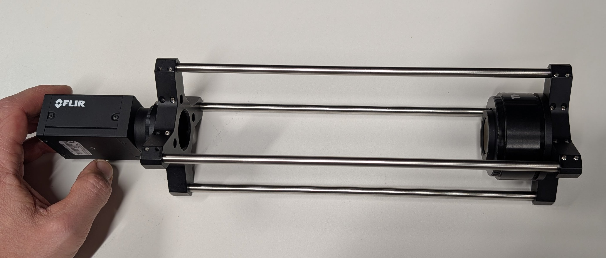